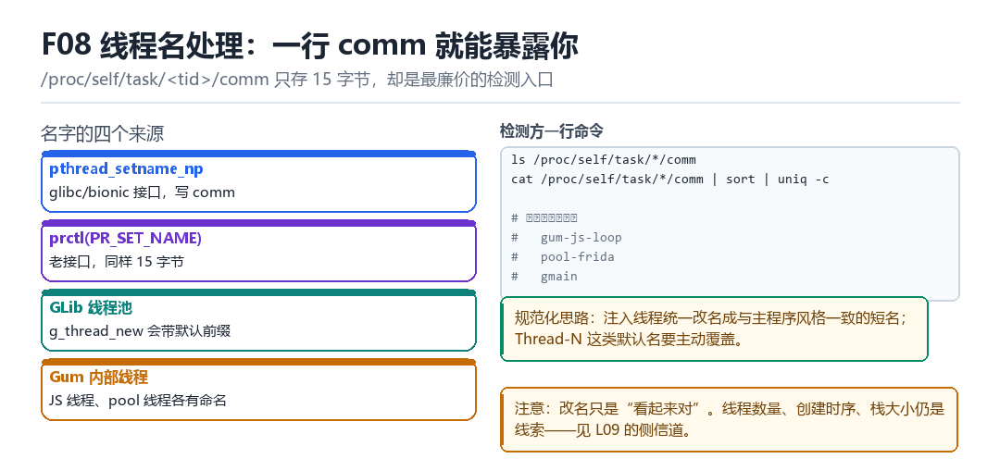

F08
Frida 线程名称处理
GLib/Gum 线程命名、/proc/self/task、comm、Thread-N 规范化
一行 comm 就能暴露你——它只存 15 字节，却是最廉价的检测入口。
8.1 名字的四个来源

| 来源 | 接口 | 备注 |
|---|---|---|
| pthread_setname_np | bionic / glibc | 写 comm，最长 15 字节 |
| prctl(PR_SET_NAME) | 老接口 | 同样 15 字节 |
| GLib 线程池 | g_thread_new | 带默认前缀 |
| Gum 内部线程 | JS 线程 / pool 线程 | 有固定命名风格 |
8.2 检测方一行命令
最廉价的检测
cat /proc/self/task/*/comm | sort | uniq -c
# 可疑：gum-js-loop / pool-frida / gmain8.3 规范化的三条规则
- 改名要“像这个 App 自己会起的名字”，而不是像系统线程——系统线程名在 App 进程里反而可疑。
Thread-N这类默认名必须覆盖，否则一眼假。- 改名只是“看起来对”；线程数量、创建时序、栈大小仍是线索（见 L09）。
8.4 本章自测
- 线程名最长多少字节？存在哪？
- 为什么“像系统线程”反而可疑？
- 改名之后还剩哪些线索？
- 如何验证改名逻辑没有窗口期？
8.5 深入：comm 的长度限制带来的连锁问题
15 字节的限制意味着长名字会被截断。这带来一个有趣的现象：两个不同的线程名可能截断成同一个，于是“按名字统计线程数”会算错。写检测规则时要注意这一点。
验证截断
cat /proc/self/task/*/comm | awk '{print length($0), $0}' | sort -rn | head8.6 实战：一次性规范化所有线程名
在 agent 启动时执行
const re = /^(gum|pool|gmain|frida)/i;
// 伪代码：枚举线程，命中特征的改名
// 注意：改名要在“线程刚创建”时做，避免窗口期8.7 原理推演：为什么线程名是“最廉价的检测”
因为它读取成本极低（读 /proc 一个文件）、不需要任何权限、且几乎不可能“没有名字”。对检测方来说，这是性价比最高的第一道筛子。
| 检测手段 | 成本 | 准确率 |
|---|---|---|
| 线程名 | 极低 | 中（可改名） |
| 线程数 | 极低 | 中（需基线） |
| start_routine | 中 | 高 |
| 栈地址分布 | 中 | 高 |
所以“改名”只是第一层；“让 start_routine 与栈看起来正常”才是真正的功夫。
8.8 数据细节：常见框架的线程名
| 框架 | 线程名 | 说明 |
|---|---|---|
| Frida | gum-js-loop / pool-frida | QJS/V8 与线程池 |
| GLib | gmain / gdbus | 主循环 |
| ART | JDWP / Signal Catcher | 系统线程 |
| 应用 | 各业务自定义 | 通常带业务前缀 |
8.9 深入：线程名的“家族特征”
同一个框架创建的线程，名字往往有共同前缀（gum-、pool-、gmain）。这种“家族特征”比单个名字更可靠——因为改名容易，但“所有线程都改成一致的风格”就很难。
| 特征 | 检测可靠度 | 改名能否消除 |
|---|---|---|
| 单个名字匹配 | 低 | 能 |
| 前缀家族匹配 | 中 | 需整体改 |
| 命名风格不一致 | 中高 | 需统一风格 |
所以“规范化”不只是“改掉可疑名字”，还要“让所有线程的命名风格一致”——比如统一用业务前缀加序号。
8.10 深入：线程数量本身也是信号
即使名字全改对了，线程数量仍然会暴露。一个纯 UI 的 App 通常 10~20 个线程；注入 agent 后往往多 5~10 个。这个差异在“同机型同版本”的基线下非常明显。
统计线程数
ls /proc/self/task | wc -l
# 更细：按名字分组
cat /proc/self/task/*/comm | sort | uniq -c | sort -rn对策只有两个：减少线程（用更轻的运行时）、或合并到已有线程（复用业务线程做 JS 调度）。后者风险高（会影响业务），前者是主流方向。
8.11 实战：一个线程清单对比表
| 线程 | 干净设备 | 注入后 | 处理 |
|---|---|---|---|
| main | 有 | 有 | 不动 |
| JDWP | 有 | 有 | 不动 |
| Signal Catcher | 有 | 有 | 不动 |
| gum-js-loop | 无 | 有 | 改名或去掉 |
| pool-frida | 无 | 有（多个） | 合并 |